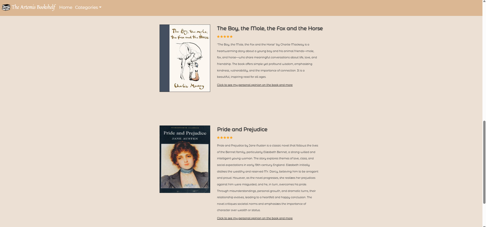
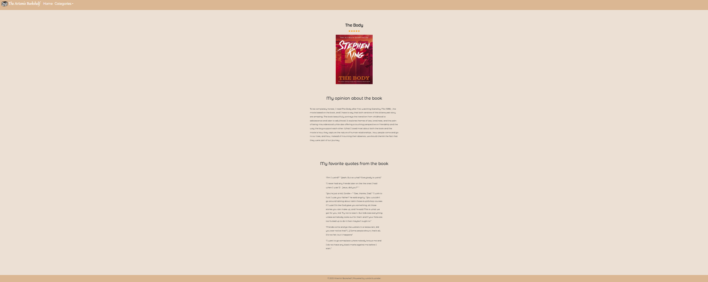
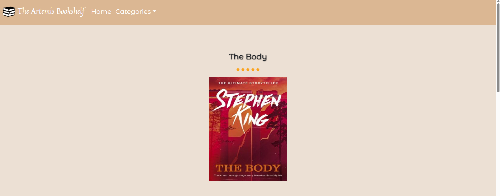
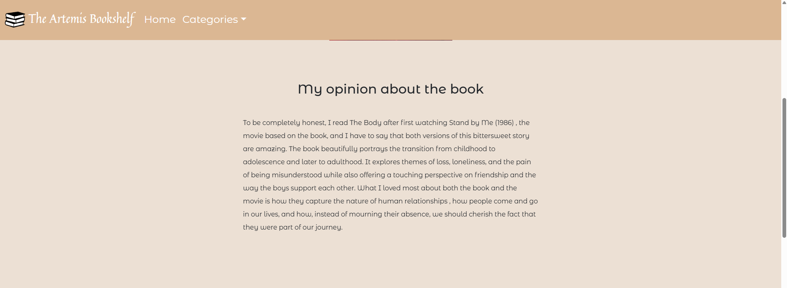
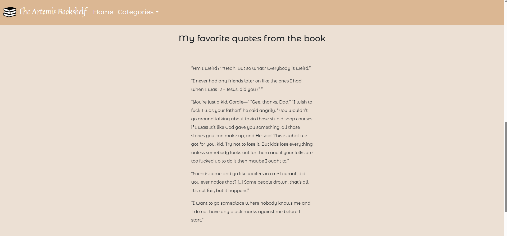
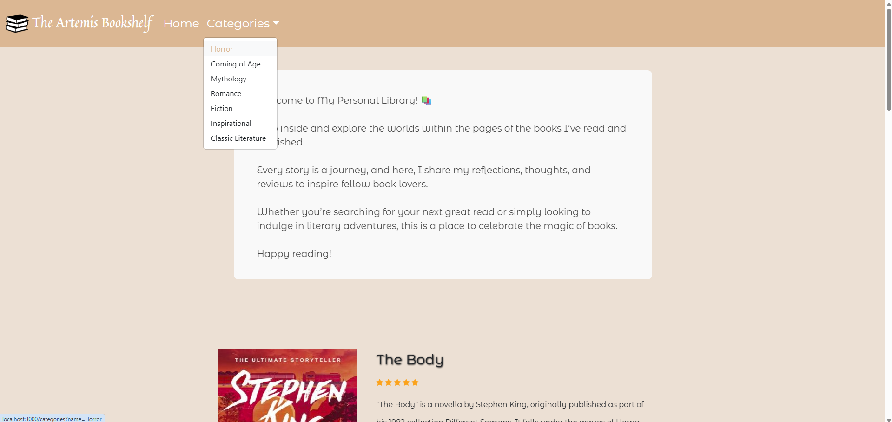

This project is a personal book journal web application designed to catalog and reflect on books I've read. It allows me to write reviews, rate books, and collect favorite quotes — all displayed in a visually calm and cozy interface inspired by personal reading nooks.
cd library_projectnpm installnpm startserver.js.
Run the following SQL in your PostgreSQL database (e.g., via pgAdmin):
CREATE TABLE books (
id SERIAL PRIMARY KEY,
title VARCHAR(100),
recomandation INT,
summary TEXT,
isbn VARCHAR(17)
);
CREATE TABLE categories (
id SERIAL PRIMARY KEY ,
name_of_category TEXT,
book_id INTEGER,
FOREIGN KEY (book_id) REFERENCES books(id)
);
CREATE TABLE my_opinion (
id SERIAL PRIMARY KEY ,
personal_opinion TEXT,
book_id INTEGER,
FOREIGN KEY (book_id) REFERENCES books(id)
);
CREATE TABLE quotes (
id SERIAL PRIMARY KEY ,
quotes TEXT,
quotes_id INTEGER,
FOREIGN KEY (quotes_id) REFERENCES books(id)
);
This demo showcases the main features of the Library App, including browsing books, viewing detailed opinions and quotes, and filtering by categories.
(This is the welcome page that displays a welcome message and a list of books)
(This section of the list displays the cover of the book ,the title , my personal rating of the book , the summary of the book and the link that if it is clicked it shows more details about the book)
   (This page provides more details about a selected book , including my personal opinion of the book and some of my favorite quotes)
(This page also allows the user to filter books by category)